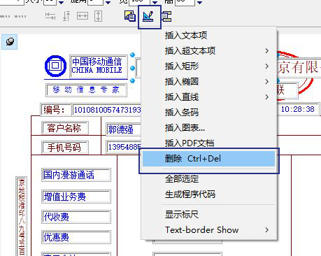

打印设计快捷键
ctrl 多个选中Shift 左侧打印项列表，连续一段选择
ctrl+鼠标滑动拖拉选中区域内打印项
按住alt+打印对象，左边打印项列表中鼠标拖动改变打印项的输出顺序
ctrl + delete 删除
ctrl + 方向键移动
按住ctrl+打印对象，同时拖拉一个对象就复制了
如何选择多个打印项
ctrl 多个选中
Shift 左侧打印项列表，连续一段选择
按住ctrl或shift可多个或连续选中。
按住ctrl，点击多个打印项，连续选中多个。
如何全部选中打印项
展开左侧的打印项列表，按住shift，选第一个，再点最后一个，连续选中所有打印项。
如何删除某个打印项
选中打印项，在设计界面的菜单下点删除。

或选中打印项，用快捷键ctrl + delete 删除
相关链接（cnblog里的旧博文)：
Lodop打印设计（PRINT_DESIGN）里的快捷键、